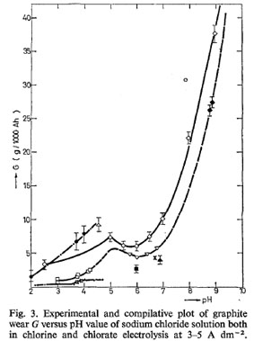

| The Graphite Anode |
|---|
The main advantage with Graphite is the fact that is is cheap and easily available as 'Gouging rods', EDM or battery carbon rods. It is non toxic. The main disadvantage is the fact that it erodes a certain amount. This makes a black suspension/sludge in the cell that much be removed. Purchasing Graphite in lump or sheet form and cutting will be cheaper than purchasing rods.

For Graphite there are four main conditions that should be met to keep erosion to a minimum.
I) The Chloride concentration in the cell should be kept above 50 Grams per Liter (this is most important). Severe Anode erosion will begin at 30g/l.
II) The pH of the cell should be kept around neutral by adding acid to the cell (this is most important).
III) The temperature of the cell should be kept below 40°C though it can go up to 60°C without undue erosion.
IV) The current density (CD) on the Anode should be kept at around 35mA per cm squared. (33 to 43) is used in industry.
Reading from reports of people using Graphite Anodes, it would appear that quite high current densities and quite high temperatures can be tolerated without excessive erosion. The big Graphite killer is low Chloride concentration and high cell pH.
Be aware, especially with rods that as the Anode wears the rod gets thinner, the surface area gets less and current density will rise (if current is kept constant). As rod Anodes wear you need to lower the current going into cell or add more rods etc if you wish current density to remain constant. This problem does not happen so much with sheet Graphite.
When you control pH you will get higher current efficiency and lower erosion and the Graphite that gets eroded does not all appear as black sludge
(as in the non-pH controlled cell) but some of it goes off as CO2.
The figures for Graphite erosion in a pH controlled cell are in the region of 3 to 6 grams Graphite sludge per kg Sodium Chlorate produced.
Graphite is not to difficult to remove from the cell liquid when extraction of Sodium Chlorate begins. Boil the cell contents for approx. five or ten minutes (Al vessel not suitable) to destroy Hypochlorites and
remove dissolved gas. Allow all the Graphite to settle to the bottom (few days) and decant off the clear liquid. The remaining small amount of black liquid can
be filtered if desired to obtain all the Chlorate.
Even in a pH controlled cell with low erosion it is next to impossible to make Potassium Chlorate that is snow white unless you add a large volume of water to the cell contents after the cell run has finished, in order to dissolve all the K Chlorate, so that settling of Graphite is possible. Filtering hot solutions of K Chlorate is next to impossible as the K Chlorate will precipitate on/in the filter. With pH controlled cells the produced K Chlorate could be used after a washing if the amount of black discoloration can be tolerated.
See this link for some accounts of running Graphite Anodes under different conditions.
Graphite will get eroded far far too much if it is used to make Perchlorate.
There is an old patent from 1918 using a divided cell which was tried but did not work.
See here for an attempt to manufacture Perchlorate using Graphite in a normal cell.
See 'The effect of pH on Graphite wear in a Chlorate cell process' here.
There is more information on the Graphite Anode to be found in Industrial Electrochemical Processes
here.
Two more refs. for Graphite Anode information are:
T.C. Jeffery, Electrochem. Technol., 5 (1967) 246 (in diaphragm, Chlor-Alkali cells)
R. Proft and S. Richter, Chem. Techn. (D.D.R.), 10 (1969) 611 (porosity and current efficiency, Chlor-
Alkali)
HIT THE BACK BUTTON ON YOUR BROWSER